ΑΛΛΑΞΤΕ ΤΗ ΖΩΗ ΣΑΣ: Γερμανός φοιτητής ιατρικής εφηύρε ένα μοναδικό προϊόν, που μπορεί να απαλλάσσει εντελώς από τα προβλήματα των αρθρώσεων! Χωρίς χειρουργική επέμβαση!
- ΥΓΕΙΑ
- ΦΥΣΙΚΑ ΠΡΟΪΟΝΤΑ
- ΒΙΤΑΜΙΝΕΣ
- ΠΟΝΟΣ ΣΤΙΣ ΑΡΘΡΩΣΕΙΣ
- ΥΓΙΗΣ ΑΡΘΡΩΣΕΙΣ
Πώς σας φαίνεται αυτή η φωτογραφία πριν και μετά;
Αυτός είναι ο Albert Eberhardt, ο καλύτερος φοιτητής ιατρικής του κορυφαίου ευρωπαϊκού πανεπιστημίου.
Κατάφερε να απαλλαγεί εντελώς από ταπροβλήματα των αρθρώσεων! Και χωρίς την χειρουργική επέμβαση!
Η ιατρική του ειδικότητα είναι η ρευματολογία. Και ενώ εργαζόταν για τη διδακτορική του εργασία συνάντησε μια νέα μέθοδο της θεραπείας των αρθρώσεων, που κανείς δεν είχε ακούσει ποτέ.
Για να βεβαιωθεί ότι δεν ήταν απλώς μια σύμπτωση, ζήτησε από τη θεία Ελισάβετ να δοκιμάσει αυτή τη μέθοδο.

Επτά ημέρες αργότερα, η θεία Ελισάβετ απαλλάχθηκε από την επώδυνη αρθρίτιδά της.
Ο ηλικιωμένος γείτονας του επίσης δοκίμασε τη νέα ολοκληρωμένη μέθοδο θεραπείας:
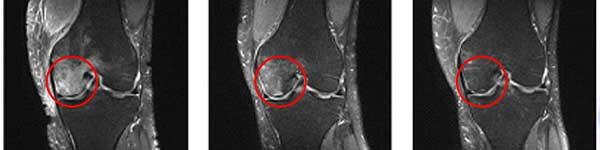Ο Thomas, ένας από τους συμμετέχοντες στη μελέτη του Albert Eberhardt, πέτυχε επίσης εξαιρετικά αποτελέσματα:
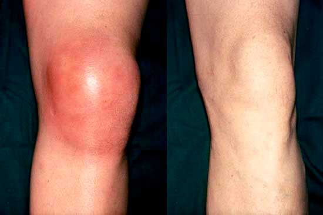Ο Thomas αντιμετώπισε το πρησμένο γόνατό του χρησιμοποιώντας τη μέθοδο του Albert Eberhardt.
Ακόμη και οι καθηγητές του Albert Eberhardt σοκαρίστηκαν με τη νέα του μέθοδο.
Μιλώντας στη σκηνή, ανακοίνωσε στην επιστημονική κοινότητα:
Μπορώ να βοηθήσω οποιονδήποτε να πετύχει αυτά τα αποτελέσματα. Αν υποφέρετε από τους πόνους στις αρθρώσεις... μπορείτε να απαλλαγείτε εντελώς από αυτούς. Δεν απαιτείται η χειρουργική επέμβαση ή άλλες επεμβάσεις χάρη σε αυτό το μοναδικό προϊόν.
Οι καθηγητές και οι συνάδελφοί του σοκαρίστηκαν. Απλά δεν μπορούσαν να το πιστέψουν.
Αλλά ο Albert Eberhardt τους απέδειξε ότι έκαναν λάθος.
Ας μιλήσουμε περισσότερο για το προϊόν που εφηύρε ο Albert Eberhardt.
Πώς ο Albert Eberhardt έκανε αυτή την ανακάλυψη;
Ο Albert Eberhardt δημιούργησε αυτό το επαναστατικό προϊόν για τον πόνο στις αρθρώσεις κατά τη διάρκεια του δεύτερου έτους του στο πανεπιστήμιο.
Εξαιτίας των συγγενών προβλημάτων στις αρθρώσεις, που επιδεινώθηκαν από τον έντονο φόρτο μελέτης και την έλλειψη των χρημάτων για την απαραίτητη θεραπεία, υπέφερε όλο και περισσότερο από τους πόνους στα πόδια. Ως μελλοντικός ρευματολόγος, ήθελε να εφεύρει μια θεραπεία που θα βοηθούσε τον εαυτό του - και όλους τους ανθρώπους με ασθένειες των αρθρώσεων.
Εφόσον ήταν σε αναπηρικό καροτσάκι, δεν είχε και προσωπική ζωή…
Μια μέρα βρισκόταν στη βιβλιοθήκη του πανεπιστημίου και αναζητούσε υλικό για την έρευνά του.
Βρήκε ένα παλιό βιβλίο που περιέγραφε μια ενδιαφέρουσα, αλλά ήδη ξεχασμένη μελέτη: «Μέθοδος της αποκατάστασης και της θεραπείας των αρθρώσεων».
Επειδή ο Albert Eberhardt ήταν σε αναπηρικό καροτσάκι, ήξερε ότι έπρεπε να κάνει κάτι.
Νέα μέθοδος θεραπείας των αρθρώσεων
Αποφάσισε να δοκιμάσει αυτή τη νέα μέθοδο θεραπείας των αρθρώσεων.
Στην αρχή προσπάθησε να δημιουργήσει το απαραίτητο προϊόν στο σπίτι από τα βοηθητικά προϊόντα, αναμειγνύοντας θειικά άλατα και βιταμίνες. Αλλά, δυστυχώς, το αποτέλεσμα δεν ανταποκρίθηκε στις προσδοκίες και η χρήση του ειδικού εξοπλισμού είναι δύσκολη και πολύ ακριβή.
Όμως κινούνταν προς τη σωστή κατεύθυνση και η μέθοδος τελικά είχε αναπτυχθεί.
Ευτυχώς, απέκτησε πρόσβαση σε ένα εργαστήριο στην ιατρική σχολή του πανεπιστημίου του, που του επέτρεψε να πειραματιστεί με αυτή τη μέθοδο.
Η μέθοδος της αποκατάστασης των αρθρώσεων ήταν απλή., το εργαστήριο είχε όλα τα απαραίτητα συστατικά.
Μετά από μήνες δοκιμών και λαθών...
...Ο Albert Eberhardt κατάφερε τελικά να βρει τον ιδανικό συνδυασμό των συστατικών.
Όλα αυτά ήταν απαραίτητα για να δοκιμάσουμε αυτή τη νέα μέθοδο θεραπείας των αρθρώσεων.
Ο Albert Eberhardt έλεγξε αυτοπροσώπως την έρευνά του. Μετά την πρώτη μέρα της θεραπείας ένιωσε λίγο καλύτερα. Το προϊόν έδειξε εκπληκτικά αποτελέσματα.
Τη δεύτερη μέρα μπορούσε να σταθεί μόνος του, χωρίς καμία υποστήριξη.
Μετά από μια εβδομάδα μπορούσε ήδη να περπατήσει 20 μέτρα μόνος του.
Μετά από 30 μέρες άρχισε να τρέχει στο γήπεδο.
Σε μόλις 30 μέρες αποκατέστησε πλήρως τις αρθρώσεις του!
Πώς λειτουργεί αυτή η θεραπεία των αρθρώσεων;
«Υπάρχει μια ουσία στο σώμα μας - η γλυκοζαμίνη, η οποία προάγει την υγεία των αρθρώσεων.
Υπάρχει μια ουσία στο σώμα μας - η γλυκοζαμίνη, και προάγει την υγεία των αρθρώσεων. Η γλυκοζαμίνη είναι ένα δομικό υλικό του χόνδρου, των τενόντων και των συνδέσμων. Αυτό το συστατικό αυξάνει την ευλυγισία των αρθρώσεων, αποτρέπει την περαιτέρω καταστροφή του χόνδρου, αυξάνει την κινητικότητα και ανακουφίζει από τα συμπτώματα του πόνου. Η μέθοδός μου διεγείρει τη σύνθεση της γλυκοζαμίνης και προωθεί την καλύτερη και ταχύτερη απορρόφηση αυτής της ουσίας. Όλα αυτά οδηγούν στην μείωση του χρόνου που απαιτείται για την αναγέννηση του χόνδρινου ιστού - και συνεπώς των ίδιων των αρθρώσεων. Η έρευνα που βρήκα στο βιβλίο ήταν από τα πρώιμα πειράματα της δεκαετίας του 1980. Ένας ασθενής που υποβλήθηκε σε νέα πορεία θεραπείας στις αρθρώσεις, δεν είχε πόνο ή τρίξιμο μετά από 10 ημέρες. Όμως η επιστημονική κοινότητα φοβήθηκε· δεν ήταν έτοιμη για τέτοια αποτελέσματα. Φοβούμενοι να αναλάβουν τις ευθύνες το πείραμα ολοκληρώθηκε και ξεχάστηκε.
Τώρα όμως μπορείτε να αποκαταστήσετε τις αρθρώσεις σας σε λίγες μόνο μέρες.
...Τι θα συμβεί εάν έχετε προβλήματα στις αρθρώσεις;
Μην ανησυχείτε.
Ακόμα κι αν έχετε σοβαρά προβλήματα στις αρθρώσεις. Ακόμα κι αν έχετε ήδη περάσει πολλά χρόνια της θεραπείας τους.
Με τη βοήθεια μιας νέας μεθόδου θεραπείας των αρθρώσεων, αυτό μπορεί να διορθωθεί εύκολα.
Για παράδειγμα, ο Ιωάννης, 62 ετών.
Τα τελευταία πέντε χρόνια πάλευε με το πρήξιμο και τον πόνο στο γόνατό του. Αλλά μετά τη χρήση της νέας μεθόδου, είναι και πάλι σε θέση να κάνει ποδήλατο, να περπατάει μεγάλες αποστάσεις και να ανεβαίνει τις σκάλες.
Δείτε τον Ιωάννη να κάνει ποδήλατο:
Υπάρχει ακόμη η 50χρονη Μαριλένα, που έχει τρία εγγόνια και θέλει να περνάει περισσότερο χρόνο μαζί τους.
Μέσα σε μόλις επτά ημέρες κατάφερε να θεραπεύσει την οσφυϊκή περιοχή της (το κάτω μέρος της πλάτης). Τώρα είναι υγιής και χαρούμενη και μπορεί να παίξει ξανά με τα εγγόνια της.
Ή τον 49χρονο Πέτρο, που οι αρθρώσεις άρχισαν να τον ενοχλούν μετά από τα 40.
Δεν θα πιστέψετε. Αλλά μετά από τη νέα θεραπεία, ξαναθυμήθηκε πώς είναι να παίζεις ποδόσφαιρο.
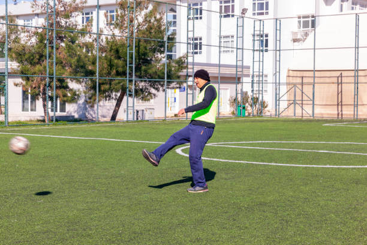Φανταστείτε ότι μπορείτε ξανά να περπατάτε πολύ, να αθλείστε, να ανεβαίνετε τις σκάλες και να μην χρειάζεστε τη βοήθεια των άλλων. Ή πώς θα ήταν να νιώθετε τόσο υγιής όσο όταν ήσασταν νεότερος/η.
Μια νέα μέθοδος θεραπείας των αρθρώσεων μπορεί να κάνει όλα τα όνειρά σας, για μια δραστήρια ζωή, πραγματικότητα.
Τα προβλήματα των αρθρώσεων - δεν είναι δικό σας φταίξιμο
Ο Albert Eberhardt πάντα αναρωτιόταν, γιατί ο καθηγητής του επέμενε σε δυνητικά επικίνδυνα και ακριβά φάρμακα και θεραπείες.
Εμβαθύνοντας στην έρευνά του, συνάντησε μια συγκλονιστική αλήθεια.
Η φαρμακευτική μαφία και οι ρευματολόγοι σε όλο τον κόσμο κρύβουν την ύπαρξη των πραγματικά δραστικών προϊόντων, γιατί είναι πιο κερδοφόρο να πουλάνε τα διαφημιζόμενα ακριβά φάρμακα, τα οποία, ανακουφίζουν μόνο προσωρινά τον πόνο και δεν θεραπεύουν πλήρως τις αρθρώσεις!
Αλλά τώρα...
Αυτή είναι το τελευταίο προϊόν που θα χρειαστείτε.
Δεν θα χρειαστείτε ποτέ ξανά αλοιφή για τις αρθρώσεις, ενέσεις ή χειρουργική επέμβαση.
Πώς συμβαίνει αυτό;
Όταν ο Albert Eberhardt έμαθε για τη νέα μέθοδο της θεραπείας των αρθρώσεων, έπρεπε να αναπτύξει έναν τρόπο, ώστε οι άνθρωποι να τη χρησιμοποιούν στην καθημερινή τους ζωή.
Ως αποτέλεσμα της έρευνάς του, ανακάλυψε ένα μυστικό συστατικό.
Αυτό το συστατικό καθιστά διαθέσιμη στο ευρύ κοινό μια νέα μέθοδο θεραπείας των αρθρώσεων.
Αυτό θα βοηθήσει και θα θεραπεύσει τις αρθρώσεις σας!
% ΑΣΘΕΝΕΙΣ, ΜΕΤΑ ΤΗΝ ΘΕΡΑΠΕΙΑ
- – Άτομα, που έχουν χρησιμοποιήσει τις παραδοσιακές θεραπείες των αρθρώσεων
- – Εθελοντές, που δοκίμασαν μια νέα μέθοδο θεραπείας των αρθρώσεων
| 13% |
| 97% |
Δεν θα πετύχετε μόνο προσωρινά αποτελέσματα.
Και αν αναρωτιέστε, πού θα βρείτε αυτή τη νέα δυνατότητα…
...Fortuflex δεν θα βρείτε στα φαρμακεία, αφού ο Albert Eberhardt μόλις πρόσφατα ολοκλήρωσε την ανάπτυξη αυτού του προϊόντος. Για το λόγο αυτό, ο γιατρός μάλλον δεν ανέφερε ποτέ αυτή την κρέμα.
Από εδώ και πέρα, μπορείτε επιτέλους να ακολουθήσετε έναν ενεργό τρόπο ζωής.
Ο Albert Eberhardt και η ομάδα του, μόλις κυκλοφόρησαν τις πρώτες παρτίδες αυτής της κρέμας.
Και πραγματικά ΠΡΕΠΕΙ ΝΑ ΒΙΑΣΤΕΙΤΕ, γιατί το προϊόν εξαντλείται γρήγορα:
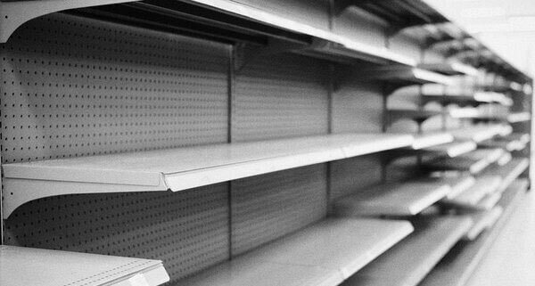Φανταστείτε ότι μπορείτε να πάρετε αυτήν την κρέμα πριν από το τέλος της τρέχουσας παρτίδας.
Μπορείτε να ξεχάσετε τον πόνο στις αρθρώσεις και τα προβλήματα της κινητικότητας.
Μπορείτε να κάνετε κάθε είδους σωματική δραστηριότητα σε οποιαδήποτε ηλικία...
...και μην ανησυχείτε για τον πόνο στις αρθρώσεις.
Και θα είστε πιο ευτυχισμένοι!
Γιατί όμως ο Albert Eberhardt αποφάσισε να δημιουργήσει αυτή την κρέμα;
Ο Albert Eberhardt θέλει και οι άλλοι άνθρωποι να έχουν την ίδια επιτυχία
Θέλει απλώς να βοηθήσει τους ανθρώπους να θεραπευτούν όπως έκανε ο ίδιος. Αυτός είναι ο στόχος της ζωής του, ως μελλοντικός γιατρός που ειδικεύεται στη θεραπεία των αρθρώσεων.
Έπρεπε να βρει κάτι, που θα λειτουργούσε για το υπόλοιπο της ζωής του.
Σύντομα θα δείτε τα αποτελέσματα της θεραπείας που δεν έχετε ξαναδεί.
Χωρίς την χειρουργική επέμβαση.
Χωρίς τις αλοιφές ή ακριβές ενέσεις.
Φανταστείτε να μην αισθάνεστε τον πόνο και να κινείστε ελεύθερα εντελώς χωρίς κάποια ενόχληση.
Τι είναι αυτό το συστατικό;
Είναι οι βιταμίνες – Е και В3.
Βοηθούν τη γλυκοζαμίνη, που παρέχεται με την τροφή, να απορροφάται καλύτερα και γρηγορότερα και να αποκαθιστούν τις αρθρώσεις.
Στον ιστό του χόνδρου, η γλυκοζαμίνη μετατρέπεται σε ουσίες απαραίτητες για τις αρθρώσεις.
Οι βιταμίνες Εκχύλισμα χονδροϊτίνης και κουμκουάτ έχουν θετική επίδραση σε ολόκληρο το σώμα.
Οι βιταμίνες Εκχύλισμα χονδροϊτίνης και κουμκουάτ όχι μόνο βελτιώνουν την απορρόφηση της γλυκοζαμίνης, αλλά αυξάνουν και το επίπεδό της στον οργανισμό.
Βοηθούν τον οργανισμό να λαμβάνει πάντα την απαραίτητη ποσότητα ουσιών για υγιείς αρθρώσεις.
...και τι μπορεί να είναι καλύτερο;
Δεν χρειάζεται να αγοράσετε ακριβές αλοιφές ή να κάνετε την χειρουργική επέμβαση για να πετύχετε εξαιρετικά αποτελέσματα.
Δείτε αυτό το τεστ, που έγινε σε δύο ασθενείς.
Ο Albert Eberhardt ζήτησε από τη μια γυναίκα να χρησιμοποιήσει αλοιφή από το φαρμακείο για ένα μήνα και την δεύτερη, την κρέμα Fortuflex με βιταμίνες Εκχύλισμα χονδροϊτίνης και κουμκουάτ.
Η γυναίκα που υποβλήθηκε σε θεραπεία με φαρμακευτική αλοιφή, δεν απαλλάχθηκε από τον πόνο:

Η γυναίκα που χρησιμοποίησε την κρέμα Fortuflex...
... θεράπευσε πλήρως την αρθρίτιδά της.
Ένας από τους λίγους καθηγητές που αναγνώρισαν τα επιτεύγματα του Albert Eberhardt, είπε:

Fortuflex – επαναστατικό προϊόν. Είναι εύκολο στη χρήση. Και θα έχετε τα πιο γρήγορα αποτελέσματα θεραπείας, χωρίς την χειρουργική επέμβαση ή τις ακριβές αλοιφές. Επίσης δεν υπάρχουν παρενέργειες. Προτείνω αυτό το προϊόν σε όλους.
Πείτε αντίο στις φαρμακευτικές αλοιφές, τις ενέσεις και τις χειρουργικές επεμβάσεις…
...είναι το καλύτερο και εύκολο στη χρήση προϊόν.
Αλλά θα σκέφτεστε, πώς μπορεί να γίνει αυτό στην καθημερινή ζωή;
Είναι πολύ απλό!!
Επειδή...
Αυτός είναι ο ευκολότερος τρόπος της θεραπείας των αρθρώσεων.
Γιατί αυτός είναι ο ευκολότερος τρόπος της θεραπείας των αρθρώσεων;
Απλώς εφαρμόστε την κρέμα δύο με τρεις φορές την ημέρα. Και μπορείτε να ανακάμψετε σε περίπου τρεις έως τέσσερις εβδομάδες!
Δεν χρειάζονται η χειρουργική επέμβαση ή οι ακριβές αλοιφές!
Χωρίς τις επώδυνες ενέσεις.
Χωρίς την αγχωτική διαδικασία.
Δεν το πιστεύετε;
Δείτε πως η Γεωργία θεράπευσε τα γόνατά της σε επτά ημέρες:
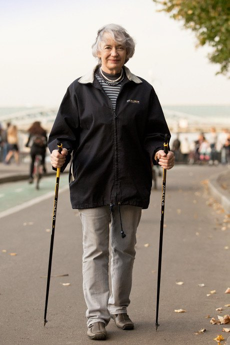Είπε: «Είχα έντονους πόνους στο αριστερό μου γόνατο για μεγάλο χρονικό διάστημα. Αυτό με δυσκόλευε στην κίνηση. Πήγα σε ειδικό και διαγνώστηκα με αρθρίτιδα στο γόνατο. Μου πρότειναν την χειρουργική επέμβαση στο γόνατο, αλλά φοβόμουν πολύ τη διαδικασία, η οποία περιλαμβάνει την εισαγωγή βελόνων στο σώμα. Ευτυχώς, εξοικειώθηκα με τη θεραπεία του Albert Eberhardt και άρχισα να χρησιμοποιώ το προϊόν Fortuflex εγκαίρως. Μετά από τρεις ημέρες, ο πόνος εξαφανίστηκε εντελώς και μια εβδομάδα αργότερα μπορούσα να περπατήσω χωρίς πόνο και άρχισα το σκανδιναβικό περπάτημα. Η φωτογραφία δείχνει το αποτέλεσμα της προόδου μου».
Ακολουθούν τα αποτελέσματα της θεραπείας με την κρέμα Fortuflex εντός 10 ημερών:
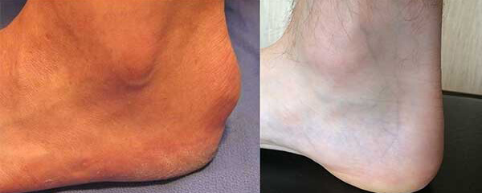Ο Κωνσταντίνος, 52 ετών, είπε: «Είχα εξόγκωμα στη φτέρνα μου. Τίποτα δεν βοήθησε... Πήγα στο γιατρό, χρησιμοποίησα διάφορες αλοιφές, δοκίμασα τις λαϊκές θεραπείες..... Αλλά δεν με βοήθησε τίποτα. Εμπιστεύτηκα την κρέμα του Albert Eberhardt και έκανα ένα πείραμα. Μετά από 2 εβδομάδες, δεν είχε μείνει τίποτα από τα άκανθα της πτέρνας! Εδώ είναι το αποτέλεσμα μου. Ευχαριστώ, Albert Eberhardt!»
Φανταστείτε ότι μπορείτε να απολαύσετε τη ζωή σας χωρίς τον πόνο. Και μην υποβάλλετε τον εαυτό σας σε χειρουργικές επεμβάσεις, θεραπείες, ενέσεις...
...πριν από έναν ενεργό τρόπο ζωής.
Περπάτημα, πεζοπορία, ποδηλασία: μπορείτε να το κάνετε κι εσείς.
Επειδή οι αρθρώσεις σας είναι υγιείς.
Η γρήγορη αποκατάσταση της άρθρωσης είναι εξαιρετική.
Υπάρχει κίνδυνος να επιστρέψει ο πόνος;
Όχι, δεν υπάρχει κίνδυνος της επανεμφάνισης των προβλημάτων στις αρθρώσεις.
Η Theresa πάλευε με τις επώδυνες αρθρώσεις αρκετά χρόνια. Χρησιμοποιούσε κάθε είδους αλοιφές και έκανε διάφορες θεραπείας.
Τίποτα δεν μπορούσε να θεραπεύσει τις αρθρώσεις της.
Ωστόσο, όταν συμμετείχε σε μια δοκιμή του προϊόντος Fortuflex, οι αρθρώσεις της επουλώθηκαν και μετά από μόλις πέντε ημέρες μπόρεσε να κολυμπήσει ξανά:
Και έξι μήνες μετά…
...Theresa ξέχασε ακόμη και τι είναι ο πόνος στις αρθρώσεις.
Ο Andreas, άλλος ένας εθελοντής που χρησιμοποίησε το προϊόν του Albert Eberhardt για 2 εβδομάδες και έδωσε τα ακόλουθα σχόλια:
Αφού θεράπευσα τις αρθρώσεις μου με αυτή την κρέμα, δεν έκανα τίποτα για έξι μήνες. Και μάντεψε; Ο πόνος στις αρθρώσεις δεν επέστρεψε!
Ιδού οι φωτογραφίες του Andrea:
Πιθανότατα, αναρωτιέστε …
Είναι ασφαλές το προϊόν Fortuflex;
Fortuflex είναι πραγματικά ασφαλές, επειδή περιέχει καλά ερευνημένα φυσικά συστατικά και βιταμίνες, που είναι αποτελεσματικές, που ο Albert Eberhardt ανακάλυψε μέσω της έρευνάς του.
Χωρίς παρενέργειες.
Και δείτε τι έχουν να πουν ορισμένοι από αυτούς τους ασθενείς:
"Ήμουν δύσπιστος σχετικά με αυτό το νέο προϊόν Fortuflex, επειδή ένιωθα δυσφορία με τα κανονικά φάρμακα. Ωστόσο, το σώμα μου δέχτηκε καλά
αυτή την κρέμα και μέσα σε ένα μήνα μπόρεσα να αποκαταστήσω τις αρθρώσεις μου."
– Klaus, Βερολίνο
"Η κρέμα Fortuflex με βοήθησε να απαλλαγώ από τον πόνο και την ενόχληση στις αρθρώσεις, χωρίς παρενέργειες."
– Karl, Μόναχο
Επομένως, εάν εξακολουθείτε να μην είστε σίγουροι αν θα χρησιμοποιήσετε το Fortuflex, μην ανησυχείτε.
Φανταστείτε υγιείς αρθρώσεις χωρίς μεγάλη προσπάθεια.
Το βασικό ερώτημα λοιπόν...
Πώς να αποκτήσετε το προϊόν Fortuflex;
Σήμερα είναι η τυχερή σας μέρα!
Ο Albert Eberhardt τελικά έλαβε έγκριση από την ομάδα του και τους επενδυτές του για να ξεκινήσει την παραγωγή της κρέμας «Fortuflex».
Η κρέμα Fortuflex:
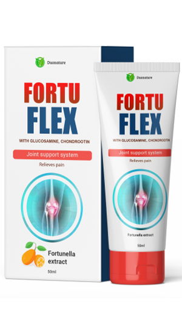Κάθε συσκευασία Fortuflex περιέχει την απαραίτητη ποσότητα βιταμινών Εκχύλισμα χονδροϊτίνης και κουμκουάτ για τη θεραπεία των αρθρώσεων.
Η ομάδα του Albert Eberhardt επένδυσε εκατοντάδες χιλιάδες ευρώ στη δημιουργία και παραγωγή του προϊόντος Fortuflex.
Μία συσκευασία κρέμας κοστίζει περίπου 80 ευρώ.
Αλλά... δεν είναι αυτή η τιμή, που θα πληρώσετε σήμερα για μια συσκευασία της κρέμας Fortuflex.
Θα μάθουμε την πραγματική τιμή σε ένα δευτερόλεπτο, όμως πρώτα...
Τι λένε για την κρέμα Fortuflex;
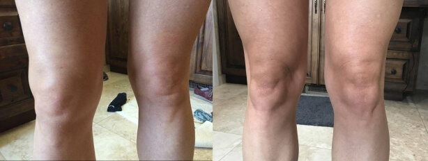
"Έχω ακούσει για την επιτυχημένη έρευνα του Albert Eberhardt, αλλά νομίζω ότι είναι πολύ καλό για να είναι αληθινό. Λοιπόν... Μετά από 5
μέρες ο πόνος στις αρθρώσεις εξαφανίστηκε! Ο Θεός να ευλογεί όλους όσους δημιούργησαν το προϊόν Fortuflex."
– Δημήτρης,
Αθήνα
"Αυτό το προϊόν σίγουρα αξίζει να το δοκιμάσετε! Θεράπευσα την αρθρίτιδα μου σε δέκα μέρες."
– Άννα, Βόλος
"Είχα προβλήματα στις αρθρώσεις σε όλη μου τη ζωή. Δεν με βοήθησαν ούτε οι ακριβές αλοιφές ούτε οι ενέσεις. Σε επτά μέρες θεράπευσα επιτέλους
τις αρθρώσεις μου. Χρησιμοποιώ την κρέμα μόνο δύο φορές την ημέρα. Είναι πολύ απλό. Ευχαριστώ, Albert Eberhardt!"
– Μάκης, Πειραιάς
"Η κοπέλα μου, πρότεινε να δοκιμάσω το προϊόν Fortuflex. Έπαθα σοκ· σε 10 μέρες κατάφερα να απαλλαγώ από την ουρική αρθρίτιδα
(ποδάγρα). Αυτό ήταν απίστευτο!"
– Ανέστης, Θεσσαλονίκη
"Απαλλάχτηκα από την αρθρίτιδα ισχίου, 2ου βαθμού σε μόλις 2 εβδομάδες! Σταμάτησα να υποφέρω, όταν άρχισα να χρησιμοποιώ την κρέμα Fortuflex.
Συνιστώ ανεπιφύλακτα αυτήν την κρέμα."
– Τάσος, Άργος
Ο Albert Eberhardt έκανε όλη αυτή τη σκληρή δουλειά, γιατί νοιάζεται για εμάς.
Ξέρει τι σημαίνουν τα προβλήματα στις αρθρώσεις.
Και τώρα που έχει την τέλεια φόρμουλα θεραπείας, θέλει όσο το δυνατόν περισσότερα άτομα να αποκτήσουν το προϊόν Fortuflex.
Είναι αλήθεια πως οι επενδυτές του Albert Eberhardt δεν θέλουν και πολύ να το κάνει αυτό, αλλά ο Albert Eberhardt θέλει απλά να βοηθήσει τους ανθρώπους να απαλλαγούν από τα προβλήματα των αρθρώσεων...
...όπως ακριβώς θεράπευσε τις αρθρώσεις του σε δεκατέσσερις μέρες.
Για να μην χρειαστεί να πληρώσετε 80 ευρώ για μια συσκευασία της κρέμας Fortuflex, ο Albert Eberhardt ξεκίνησε μια προσφορά περιορισμένου χρόνου.
Αυτή τη στιγμή διοργανώνει μια κλήρωση, όπου μπορείτε να αποκαταστήσετε 50% έκπτωση στο προϊόν Fortuflex. Η προσφορά ισχύει έως και τις 4.2.202410/6/2023 .
Εάν εξακολουθείτε να έχετε αμφιβολίες...
Τι έχετε να χάσετε;
Έχετε 2 επιλογές.
Επιλογή 1... αποφασίστε. Το προϊόν Fortuflex δεν είναι για εσάς.
Μπορείτε να φύγετε από αυτόν τον ιστότοπο και απλά να συνεχίσετε να ζείτε τη ζωή σας, συνεχίζοντας να αισθάνεστε τον πόνο και να ονειρεύεστε τις υγιείς αρθρώσεις.
Δεν υπάρχει τίποτα κακό σε αυτό.
Ή... Επιλογή 2... Μπορείτε να πάρετε τη ζωή σας στα χέρια σας και να παραγγείλετε το προϊόν Fortuflex...
...και θεραπεύστε τις αρθρώσεις σας σε μόλις 14 ημέρες.
Η επιλογή είναι δική σας!
Εάν είστε έτοιμοι να φροντίσετε την υγεία σας σήμερα, κάντε κλικ στον τροχό παρακάτω και κερδίστε έκπτωση έως και 50% για μια συσκευασία κρέμας Fortuflex!
(Σιγουρευτείτε ότι παραγγείλατε Fortuflex πριν από το τέλος της ειδικής προσφοράς)
Σημείωση: Ο Albert Eberhardt, όπως και οι ασθενείς του, χρησιμοποιούσε επίσης το προϊόν Fortuflex για τη θεραπεία των αρθρώσεων.

Ενημέρωση 2.2.202410/4/2023 : Το προϊόν Fortuflex εξακολουθεί να είναι διαθέσιμο με την έκπτωση έως και τις 4.2.202410/6/2023
Προσοχή!
Η πύλη μας προσφέρει στους αναγνώστες έκπτωση. Δοκιμάστε την τύχη σας πατώντας το κουμπί γυρίζω. Εάν είστε τυχεροί, μπορείτε να αποκτήσετε το «Fortuflex» με έκπτωση 50%

γυρίζω

Το μόνο που χρειάζεται να κάνετε είναι να εισαγάγετε το όνομα και τον αριθμό τηλεφώνου σας.
Βιάσου!
Σας απομένει χρόνος:
10 : 00
78 Euro
39 Euro
Συγχαρητήρια!
Μπορείτε να αποκτήσετε το «Fortuflex» ΔΩΡΕΑΝ!

Αθηνά Ξενοπούλου
27.09.2023
Είναι μια θαυματουργή θεραπεία!!! Θέλω και εγώ να αγοράσω την κρέμα, θέλω επιτέλους να αποκαταστήσω τις αρθρώσεις μου και να κάνω πεζοπορία στα βουνά!
Πέτρος Κωνσταντίνου
27.09.2023
Μετά από μια σοβαρή μολυσματική ασθένεια, παρατήρησα ότι το χέρι μου άρχισε να πρήζεται πολύ. Αυτό με ενόχλησε πολύ και απευθύνθηκα σε ειδικό. Η εξέταση έδειξε πως έχω τοξική-αλλεργική αρθρίτιδα. Για να είμαι ειλικρινής, αυτή ήταν η πρώτη φορά που άκουσα για αυτή την ασθένεια. Όπως αποδείχθηκε, προέκυψε λόγω των μεταβολικών διαταραχών στο φόντο της μόλυνσης. Και σκέφτηκα πως θα είχα ένα τέτοιο χέρι για το υπόλοιπο της ζωής μου. Ήμουν πολύ απογοητευμένος. Η γυναίκα μου, φυσικά, με ενθάρρυνε ότι θα έχουμε αυτό το πρόβλημα υπό έλεγχο. Διάβασα για την κρέμα Fortuflex σε κάποιο φόρουμ και την παρήγγειλα, γιατί ήθελα πολύ να τη δοκιμάσω. Δεν μπορώ να περιγράψω με τα λόγια το αποτέλεσμα! Είναι ένα είδος μαγείας, δεν ξέρω πώς να το περιγράψω... Αυτή η κρέμα με βοήθησε, κυριολεκτικά μετά την πρώτη χρήση. Είμαι πολύ χαρούμενος που το χέρι μου φαίνεται πάλι υγιές και μπορώ να το κινήσω κανονικά! Εδώ είναι το αποτέλεσμά μου:
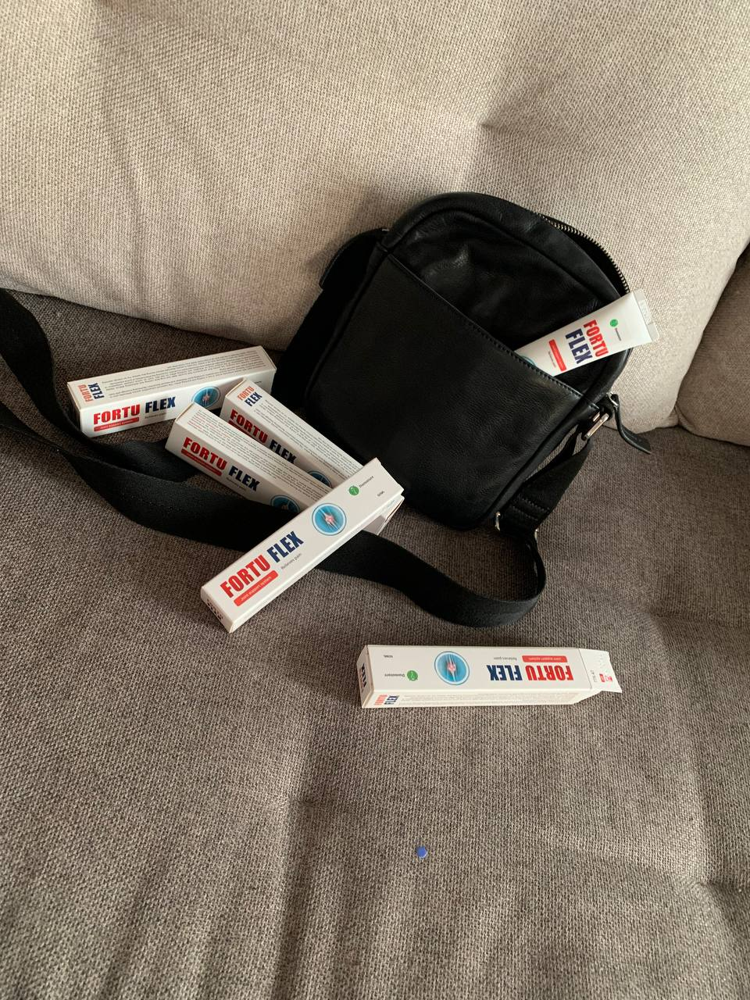
Σάββας Πετρόπουλος
27.09.2023
Όταν άρχισα να χρησιμοποιώ την κρέμα Fortuflex είχα ήδη δευτεροπαθή αρθρίτιδα. Συνεχής ενόχληση, περιοδικός πόνος, πρήξιμο. Μετά από πέντε ημέρες παρατήρησα μια σημαντική βελτίωση. Σταδιακά ο πόνος σταμάτησε και μπόρεσα να κυκλοφορώ ξανά ελεύθερα. Με συμβουλή συμβούλου ολοκλήρωσα ένα εξάμηνο πρόγραμμα προληπτικής θεραπείας. Δεν έχει παρενέργειες και συνδυάζεται καλά με άλλα προϊόντα.

Αμαλία Τοκίδου
27.09.2023
Δυστυχώς, κληρονόμησα την θυλακίτιδα. Δεν έδινα σημασία πριν, δεν με ενόχλησε πολύ. Όμως πριν από 2 χρόνια, όταν έκλεισα τα 46, άρχισε να με ενοχλεί. Τα πόδια μου ήταν πολύ κουρασμένα, ήταν κόκκινα και με πονούσαν τρομερά. Ήταν αφόρητο. Τότε αποφάσισα να θεραπεύσω τα πόδια μου με τις λαϊκές θεραπείες. Σε μισό χρόνο δοκίμασα τα πάντα, αλλά χωρίς αποτέλεσμα. Αργότερα βρήκα τις πληροφορίες πως μπορείτε να απαλλαγείτε από τη θυλακίτιδα χρησιμοποιώντας την κρέμα Fortuflex. Διάβασα πολλές κριτικές για αυτήν την κρέμα. Φοβόμουν, αλλά αποφάσισα να δοκιμάσω ούτως ή άλλως. Ως αποτέλεσμα, είμαι πολύ ευχαριστημένη με την κρέμα! Δεν μετανιώνω που την παρήγγειλα. Παρεμπιπτόντως, μετά από ένα μήνα άρχισα να φοράω πάλι τακούνια, 7 εκ. Τα πόδια μου δεν κουράζονται όπως πριν, όταν είχα θυλακίτιδα. Μετά από δύο μήνες τα πόδια μου είναι έτσι:

Στέφανος Μουρατίδης
27.09.2023
Τα τελευταία έξι χρόνια, η μητέρα μου είχε έντονους πόνους στις αρθρώσεις της, ειδικά στα χέρια και τα γόνατά της. Ήταν πρησμένα, δεν μπορούσε πια να περπατήσει ή να κάνει οτιδήποτε με τα χέρια της, τα δάχτυλά της με δυσκολία λυγούσαν. Πριν από έξι χρόνια διαγνώστηκε με ρευματοειδή αρθρίτιδα και αρχικά λάμβανε την θεραπεία δύο φορές το χρόνο. Υπήρχαν στιγμές που δεν παραπονιόταν για τίποτα. Αλλά με τον καιρό χειροτέρευε. Ειδικά το φθινόπωρο και τις αρχές του χειμώνα. Και χρόνο με τον χρόνο οι παροξύνσεις γίνονταν όλο και πιο έντονες. Μια μέρα πήγε να δει έναν θεραπευτή. Την κατεύθυνε δεί έναν ρευματολόγο. Αλλά αυτή τη φορά όλα αποδείχτηκαν ακόμη πιο περίπλοκα. Το πρήξιμο των αρθρώσεων δεν μειώθηκε, ο πόνος ήταν σταθερός και εξαφανίστηκε μόνο μετά από τις ενέσεις και φάρμακα. Όλες οι αρθρώσεις έγιναν κόκκινες, οι αλοιφές από το φαρμακείο μόνο ενίσχυαν την ερυθρότητα. Αλλά αυτό που ήταν ακόμη πιο σοβαρό ήταν που η μητέρα μου δεν μπόρεσε να ολοκληρώσει την θεραπεία. Πονούσαν το στομάχι της και το συκώτι της. Έπρεπε να σταματήσει τα χάπια και τις ενέσεις. Και οι αρθρώσεις της συνέχισαν να φθείρονται. Αποφασίσαμε να αναζητήσουμε μια διαφορετική θεραπεία από αυτή που συνταγογραφεί ο ρευματολόγος. Και παραγγείλαμε Fortuflex. Και δεν το μετανιώσαμε. Μετά από τρεις εβδομάδες, η μητέρα μου άρχισε να αισθάνεται σημαντικά καλύτερα, κάτι που δεν μπόρεσε να πετύχει για μεγάλο χρονικό διάστημα με συνηθισμένα φάρμακα. Τώρα η μητέρα μου συνεχίζει τη θεραπεία.

Ελένη Μαργαρίτη
27.09.2023
Φανταστικά αποτελέσματα! Και εγώ θέλω να αγοράσω. Που μπορώ να παραγγείλω αυτή την κρέμα;
Γιάννης Στεφανίδης
27.09.2023
Μέσω της επίσημης κλήρωσης στο τέλος του άρθρου. Τώρα υπάρχει μια προσφορά, μπορείτε να κερδίσετε έκπτωση έως και 50%.
Σταύρος Αλεξάκης
28.09.2023
Πριν από ένα χρόνο στραμπούλιξα το πόδι μου κατά το άλμα με αλεξίπτωτο, με πήγαν στα επείγοντα, είπαν πως ήταν πρόβλημα με τους συνδέσμους, αλλά τίποτα το σοβαρό. Ωστόσο μετά τον τραυματισμό πονούσε συνεχώς το γόνατό μου και δεν μπορούσα να αθληθώ κανονικά. Στη συνέχεια έκανα μαγνητική τομογραφία, η οποία αποκάλυψε ένα μώλωπα στο γόνατο. Βρήκα αυτό το άρθρο στο Διαδίκτυο, πήρα την έκπτωση 50% και έκανα αίτηση για Fortuflex. Έφτασε λίγες μέρες αργότερα και δοκίμασα αμέσως το προϊόν. Χρησιμοποίησα την κρέμα Fortuflex τρεις μήνες προληπτικά. Το πόδι λειτουργεί καλά και σταδιακά αυξάνω το φορτίο.

Ελευθερία Λαμπροπούλου
28.09.2023
Τι περιμένετε; Παραγγείλετε αυτήν την κρέμα και ξεκινήστε τη θεραπεία με Fortuflex! Επειδή πρόκειται για ειδική προσφορά, μπορείτε να την παραγγείλετε με έκπτωση.
Μαρία Στρατούλη
28.09.2023
Δοκίμασα άλλα προϊόντα, θεραπείες και ενέσεις που βοήθησαν, αλλά όχι για πολύ, επειδή ο πόνος επανερχόταν. Μου κόστισε πολλά χρήματα, χρόνο και κόπο. Αλλά χάρη στην κρέμα Fortuflex, ο πόνος στις αρθρώσεις εξαφανίστηκε γρήγορα και δεν επέστρεψε ποτέ. Δεν πονάνε πια τα γόνατά μου. Πρώτα, παρήγγειλα ένα προϊόν δοκιμαστικά με την έκπτωση και από την πρώτη μέρα παρατήρησα πως αυτή η κρέμα πραγματικά λειτουργεί. Στη συνέχεια παρήγγειλα μια πλήρη πορεία θεραπείας, η οποία αποδείχθηκε πολύ προσιτή. Σίγουρα θα συνιστούσα αυτή την κρέμα σε όλους.

Κατερίνα Χρηστίδου
28.09.2023
Αγόρασα ήδη και πήρα έκπτωση 50%. Η τιμή ήταν χαμηλή και η παράδοση γρήγορη. Δείτε το αποτέλεσμά μου. Φωτογραφίες πριν/μετά:

Ξένια Ασημάκη
28.09.2023
Εξαιρετικό αποτέλεσμα!
Αθανάσιος Κυριακίδης
28.09.2023
Οι πιο σημαντικές αλλαγές συμβαίνουν μέσα σας. Πρώτα θα βελτιώσετε τη σωματική σας υγεία και μετά τη συναισθηματική σας υγεία, θα νιώσετε πιο ευτυχισμένοι από ποτέ!
Ευγενία Βλαχογιάννη
28.09.2023
Συμφωνώ απόλυτα! Μετά από μια πορεία αυτής της θεραπείας, ο σύζυγός μου και εγώ κάναμε σεξ, δεύτερο μήνα του μέλιτος, όπως ήταν πριν από 20 χρόνια! Το καλύτερο με αυτή την κρέμα είναι ότι επουλώνει γρήγορα τις αρθρώσεις, είναι τόσο απλή και βολική!
Κωνσταντίνα Λαζαρίδου
29.09.2023
Το καλοκαίρι όλα είναι λίγο πολύ φυσιολογικά, διότι φοράω ανοιχτά παπούτσια και δεν με ενοχλεί τίποτα. Αλλά από το φθινόπωρο και μέχρι την άνοιξη, έχω συνέχεια φλεγμονές στις αρθρώσεις μου. Ακόμα κι αν τα παπούτσια είναι άνετα και δεν είναι στενά, πάλι με πονάει όταν περπατάω. Πάντα όμως είχα προβλήματα με τα κότσια στους αντίχειρές μου. Κάθε νέο παπούτσι ή αλλαγή παπουτσιού κατά τη διάρκεια της εποχής, προκαλεί φλεγμονή του κάλου. Δεν είμαι σίγουρη ότι αυτή η θεραπεία θα με βοηθήσει.
Στάθης Παπαδόπουλος
29.09.2023
Κωνσταντίνα Λαζαρίδου, μην ανησυχείτε! Η κρέμα Fortuflex βοηθάει πραγματικά σε ασθένειες των αρθρώσεων. Από τις πρώτες μέρες φάνηκε ότι η κρέμα λειτούργησε. Τώρα μπορώ να παίξω ξανά με τον αγαπημένο μου εγγονό.

Μάγδα Αθανασιάδη
29.09.2023
Απίστευτος! Albert Eberhardt, σε ευχαριστώ πολύ για την εφεύρεσή σου. Δυστυχώς το πρόβλημα είναι επίκαιρο για πολλούς…
Σοφία Διαμαντοπούλου
29.09.2023
Είμαι 53 ετών. Πιστεύετε ότι αυτή η θεραπεία θα βοηθήσει με την αρθρίτιδα στην ηλικία μου;
Στέλλα Ζαχαράκη
29.09.2023
Αξίζει μια προσπάθεια. Είναι το καλύτερο προϊόν που έχω δοκιμάσει.
Γεώργιος Καλημέρης
29.09.2023
Παίρνω χάπια αρθρίτιδας εδώ και 2 χρόνια. Δεν μπορούσα να ζήσω μια μέρα χωρίς τα παυσίπονα· πονούσαν όλες οι αρθρώσεις μου. Δεν έχω τελειώσει ακόμα την θεραπεία με την κρέμα Fortuflex. Όμως ζω ήδη χωρίς τα χάπια, νιώθω υπέροχα και γεμάτος ενέργεια.
Όλγα Βασιλείου
29.09.2023
Η γιαγιά μου έχει αρθροπάθεια της άρθρωσης του γόνατος και οι γιατροί της συνταγογράφησαν διάφορα φάρμακα που της αντενδείκνυνται αυστηρώς. Έτσι, απευθυνθήκαμε σε έναν κορυφαίο ειδικό στη θεραπεία των αρθρώσεων για βοήθεια. Μας συνέστησε την κρέμα Fortuflex και εξήγησε πως αυτή η κρέμα περιέχει μόνο φυσικά συστατικά και η δράση της είναι πολύ πιο δυνατή. Στην αρχή έμεινα έκπληκτη από την τιμή, σκέφτηκα ότι το προϊόν με τόσο χαμηλή τιμή δεν θα μπορούσε να είναι ένα "σούπερ φάρμακο", αλλά η γιαγιά μου μου ζήτησε να το παραγγείλω, εφόσον τίποτα άλλο δεν βοήθησε. Όταν παραλάβαμε την κρέμα και η γιαγιά τη δοκίμασε, κατάλαβα πόσο λάθος έκανα. Η κρέμα Fortuflex την βοήθησε πραγματικά πολύ - ο πόνος και το πρήξιμο εξαφανίστηκαν. Και όλο αυτό σε μόλις τρεις μέρες.
Δήμητρα Παναγιωτίδη
29.09.2023
Απίστευτη κρέμα! Μου άρεσε που έγινε η προώθηση της προσφοράς. Αν για κάποιο λόγο δεν σας αρέσει η κρέμα, έχετε λίγα να χάσετε. Εδώ είναι τα αποτελέσματά μου.

Λυδία Φωκά
30.09.2023
Πόσο χρόνο σας πήρε;
Δήμητρα Παναγιωτίδη
30.09.2023
Περίπου 10 μέρες
Ασπασία Στεργίου
30.09.2023
Δεν μπορώ να πιστέψω ότι μπορείς τελικά να παραγγείλεις την κρέμα Fortuflex στην Ελλάδα σε τόσο χαμηλή τιμή!
Μαρίνα Παρασκευοπούλου
30.09.2023
Αυτό δεν είναι ασθένεια, αυτό είναι βασανιστήριο. Ο άντρας μου είναι όλη μέρα όρθιος στην δουλειά, οπότε είχε προβλήματα. Μετά από σύσταση φίλων πήγαμε στην κλινική. Έγινε διάγνωση αρθροπάθειας του ποδιού. Ο σύζυγος στην αρχή φοβήθηκε, αλλά στη συνέχεια ο γιατρός τον καθησύχασε, λέγοντας πως δεν χάθηκαν όλα και συνέστησε την κρέμα Fortuflex. Το αποτέλεσμα ήταν αισθητό από την πρώτη μέρα. Τουλάχιστον τώρα μπορεί να περπατήσει κανονικά και δεν πονάει πια. Η κρέμα τον βοήθησε πολύ.
Μιχάλης Βασιλάκης
30.09.2023
Εξαιρετικό προϊόν. Ευτυχώς που διάβασα αυτό το άρθρο πριν από την επέμβαση του μηνίσκου. Για πολύ καιρό μετά τον τραυματισμό είχα μυϊκή ατροφία, καθώς και την ενόχληση στην άρθρωση. Χάρη στο προϊόν Fortuflex, όλα εξαφανίστηκαν και τώρα μπορώ να πάω ξανά στο γυμναστήριο
Γεωργία Νικολάου
30.09.2023
Είμαι τόσο χαρούμενη που βρήκα την κρέμα Fortuflex! Η ποιότητα της ζωής μου έχει βελτιωθεί σημαντικά. Είμαι και πάλι μια ευτυχισμένη γυναίκα... ευχαριστώ!

Μπάμπης Κανέλλης
30.09.2023
Αυτή η κρέμα με κάνει να νιώθω σαν να είμαι ξανά γύρω στα 30. Πηγαίνω βόλτες, παίζω πολύ με τα εγγόνια μου, κάνω πάλι ποδήλατο και είμαι 53 ετών)))
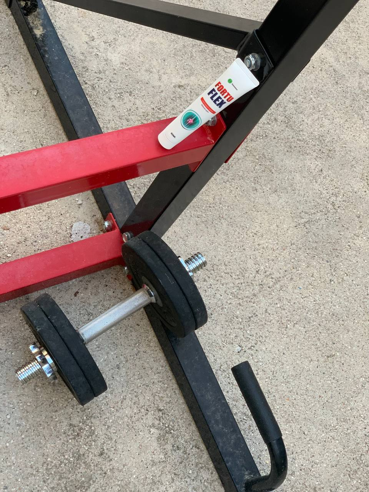
Νίκος Γρηγοριάδης
30.09.2023
Η γυναίκα μου και εγώ κάναμε την ολοκληρωμένη θεραπεία Fortuflex και θεραπεύσαμε τις αρθρώσεις μας χωρίς την χειρουργική επέμβαση, ακριβές αλοιφές και διάφορες διαδικασίες. Αυτή η κρέμα είναι απίστευτη!
Σάκης Αποστόλου
01.10.2023
Δεύτερη φορά τραυματίστηκα στην πίστα του σκι. Οι τοπικοί ειδικοί είπαν ότι επρόκειτο για εξάρθρωση· η μαγνητική τομογραφία επιβεβαίωσε τη διάγνωση. Ήμουν τυχερός διότι μου σύστησαν αυτή την κρέμα αμέσως. Στην αρχή αμφέβαλα, γιατί η τιμή μου φαινόταν πολύ χαμηλή, αλλά ο γιατρός με έπεισε ότι θα βοηθούσε. Την παρήγγειλα και παραδόθηκε γρήγορα. Όλα είναι πολύ απλά και ξεκάθαρα. Σε ένα μήνα θα μπορώ να ξαναρχίσω τον αθλητισμό. Μέχρι στιγμής δεν έχω πόνο.

Χριστίνα Καραγιάννη
01.10.2023
Σήμερα απολύτως όλοι μπορούν να έχουν ένα υγιές σώμα χωρίς τον πόνο στις αρθρώσεις. Όχι μόνο οι ελάχιστοι άνθρωποι με καλά γονίδια και πολλά χρήματα.
Κώστας Ελευθερίου
01.10.2023
Χρειάστηκαν μόνο 7 ημέρες για να ανακτήσω την κινητικότητα στα κάτω άκρα μου. Αυτή είναι η πιο γρήγορη θεραπεία για τις αρθρώσεις.
Ανδρέας Μιχάλαρος
01.10.2023
Χρησιμοποιώ την κρέμα μόνο λίγες μέρες και ήδη βλέπω τα πρώτα αποτελέσματα. Διάγνωση: αρθρίτιδα των δακτύλων. Ο πόνος εξαφανίστηκε, η κινητικότητα αυξήθηκε και η γενική κατάσταση βελτιώθηκε σημαντικά. Σίγουρα θα αφήσω άλλη κριτική όταν τελειώσω την θεραπεία.
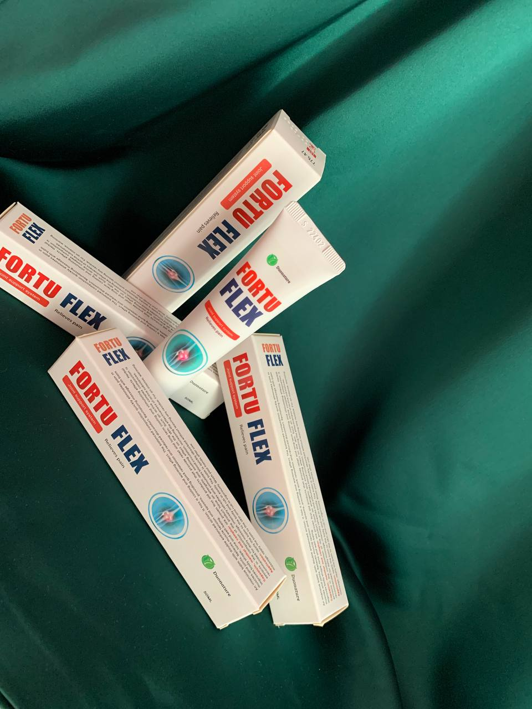
Ηλίας Κούκιος
01.10.2023
Είναι πολύ απλό: η κρέμα πρέπει να χρησιμοποιείται μόνο δύο έως τρεις φορές την ημέρα.
Κυριακή Τζωρτζάκη
01.10.2023
Παραγγείλετε την κρέμα Fortuflex όσο ισχύει η έκπτωση και θα καταλάβετε αμέσως ποιο είναι το θέμα: αυτή είναι η πιο αξιόπιστη και ασφαλής μέθοδος!